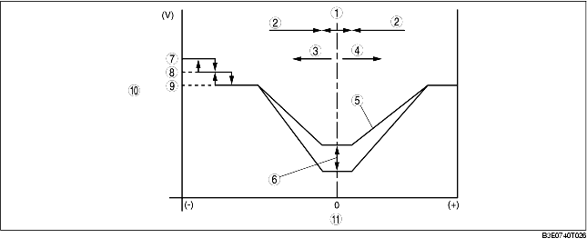
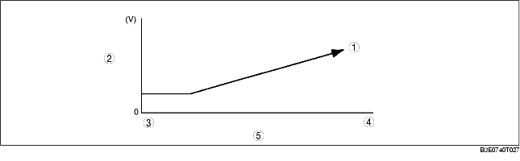
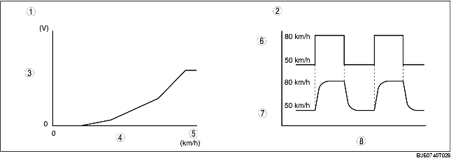
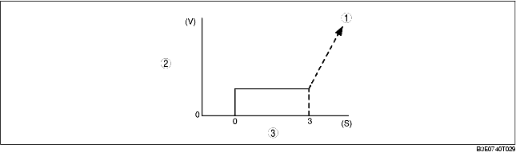

• The climate control unit calculates the blower motor applied voltage characteristic based on the set temperature, ambient temperature, and solar radiation amount.
• Compares the differences among this blower motor applied voltage characteristic and the target temperature (Calculated control value T2) and then determines the blower motor applied voltage (AUTO voltage).
• Calculated control value T2 is the difference between the set temperature and temperatures input from the sensors, and is used by the climate control unit to determine the target cabin temperature determined. Calculated control value T2 is constantly calculated according to the set temperature and the signals input from the sensors.

.
Engine coolant temperature correction (warm-up correction)
• Controls the blower motor applied voltage according to the increase in engine coolant temperature to prevent discomfort caused by a high volume of cold air blown from the vents in winter after starting the engine. However, the engine coolant temperature correction is not performed during defroster correction and when the cabin temperature is 20 °C {68 °F} or more, and the airflow mode is in VENT mode.

.
Vehicle speed correction
• When the air intake mode is at FRESH while driving at high speed, the airflow volume increases due to the wind blowing against the vehicle and air conditioner performance is negatively effected. To prevent this, the blower motor applied voltage is corrected according to the vehicle speed. Also the climate control unit stably performs control even when the vehicle speed is suddenly changed due to braking by delaying the input vehicle speed signal. However, the vehicle speed correction is not performed during airflow volume manual control, defroster correction, start compensation correction, fail-safe function, MAX HOT control and MAX-HI.

.
Mild start correction
• Limits blower motor applied voltage for 3 s after the blower motor is started in summer to prevent discomfort caused by a high volume of hot air blown from the vent. However, the mild start correction is not performed when the cabin temperature is 20 °C {68 °F} or less and when the airflow is in any mode other than VENT.

.
MAX HOT and MAX COLD correction
• When the set temperature is at 29.0, the blower motor applied voltage is fixed at AUTO-HI, and when the set temperature is at 15.0, the blower motor applied voltage is fixed at MAX-HI. However, MAX HOT correction is not performed during engine coolant correction.
|
Correction name
|
Set temperature
|
Blower motor applied voltage
|
|---|---|---|
|
MAX HOT correction
|
29.0
|
12.1 (V): AUTO-HI
|
|
MAX COLD correction
|
15.0
|
VB: MAX-HI
|
Window fogging prevention correction at start
• Just after engine start, the A/C compressor is not turned on due to PCM A/C cut-off control. As air blows from the defroster when the heater is started, the windows can easily become fogged. To prevent this, blower motor applied voltage is fixed at 0 V for 6 s after the ignition switch is turned to the ON position. However, window fogging prevention correction at start is not performed when the airflow mode is in any mode other than HEAT, HEAT/DEF or DEFROSTER.
Starting compensation correction
• When the blower motor is started-up at the lowest speed (3.2 V), the blower motor applied voltage is fixed at 4.4 V for 2 s to stabilize blower motor start-up operation.
Defroster correction
• To improve defrosting of the windows, a correction (+2 V) is added to the blower motor applied voltage when the defroster switch is turned on.
Starting burn-out prevention function
• When the blower motor is started-up from the stopped status with a blower motor applied voltage of 4.4 V or more, the blower motor applied voltage is fixed at 4.4 V for 1 s to prevent the blower motor from burning out due to excessive current.
• The blower motor applied voltage (airflow volume) can be switched in seven steps with the fan switch.
|
Fan switch
|
Blower motor applied voltage
|
|---|---|
|
1st
|
4.4 V
|
|
2nd
|
6.1 V
|
|
3rd
|
7.8 V
|
|
4th
|
9.5 V
|
|
5th
|
10.8 V
|
|
6th
|
12.1 V
|
|
7th
|
B+
|